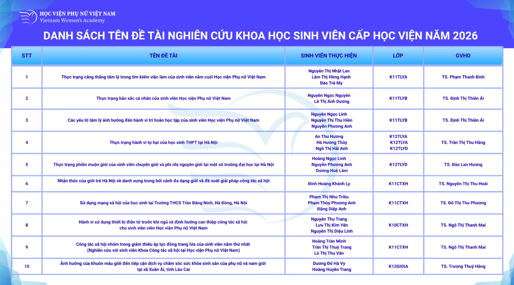
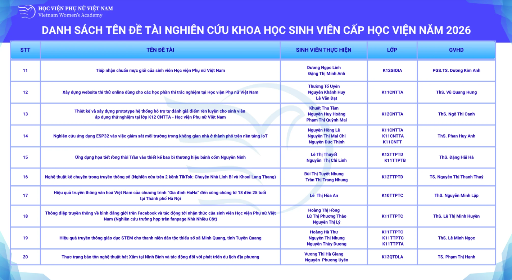
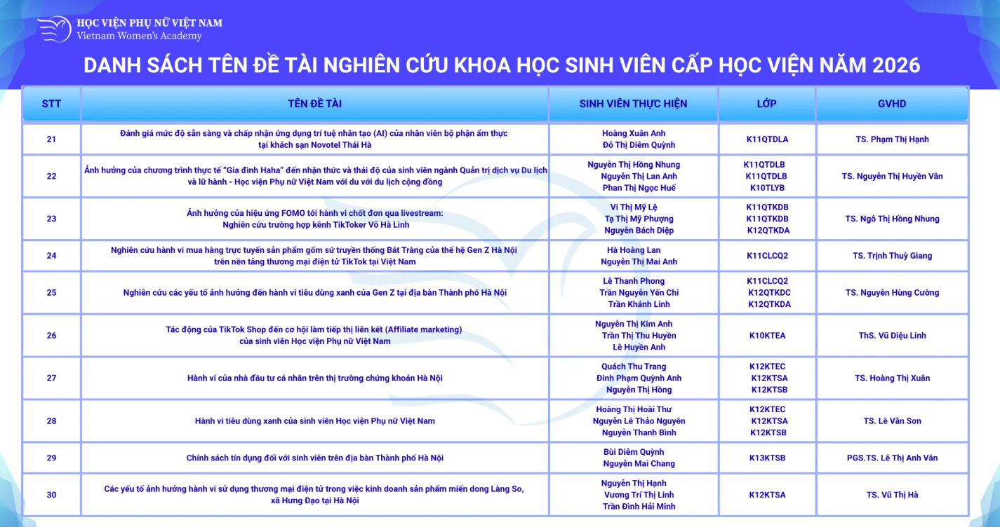
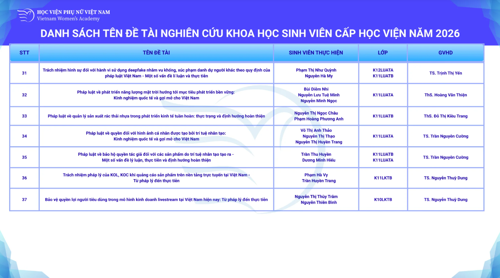
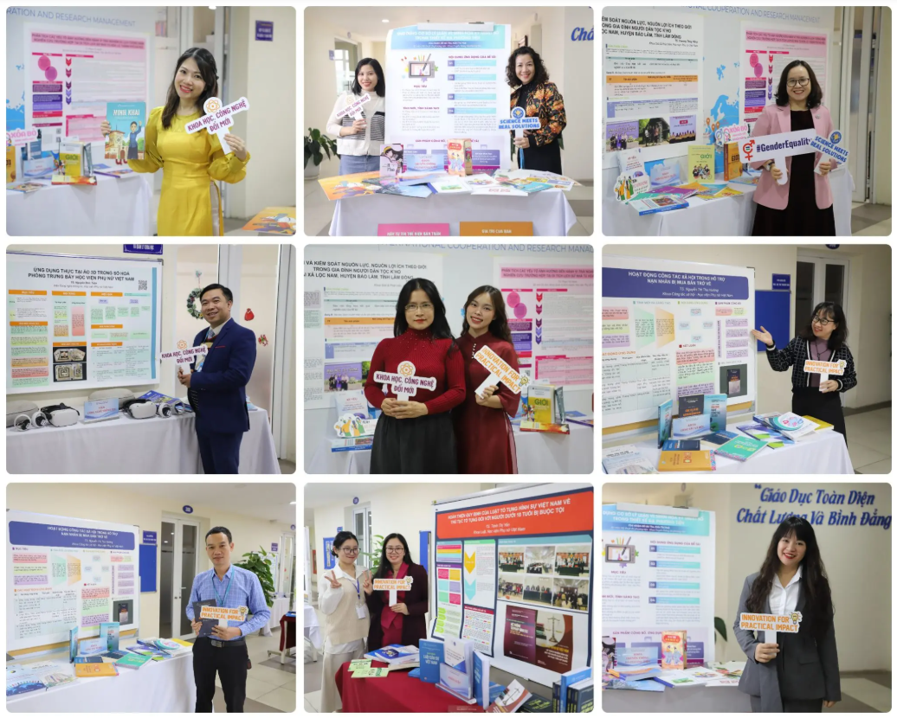
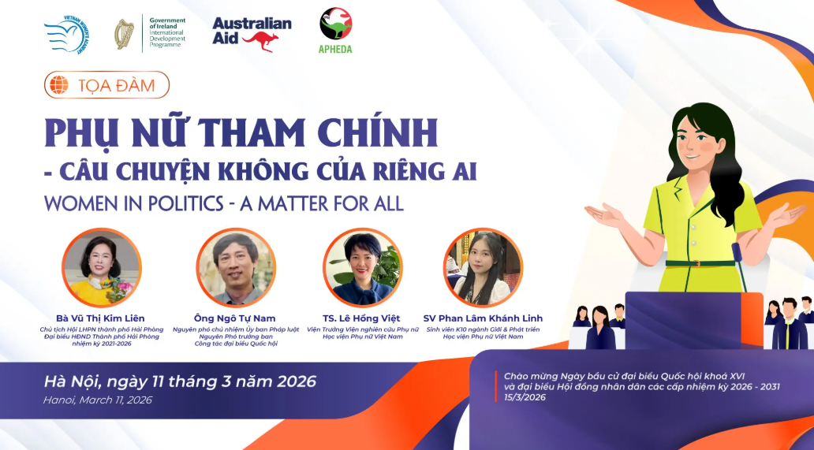
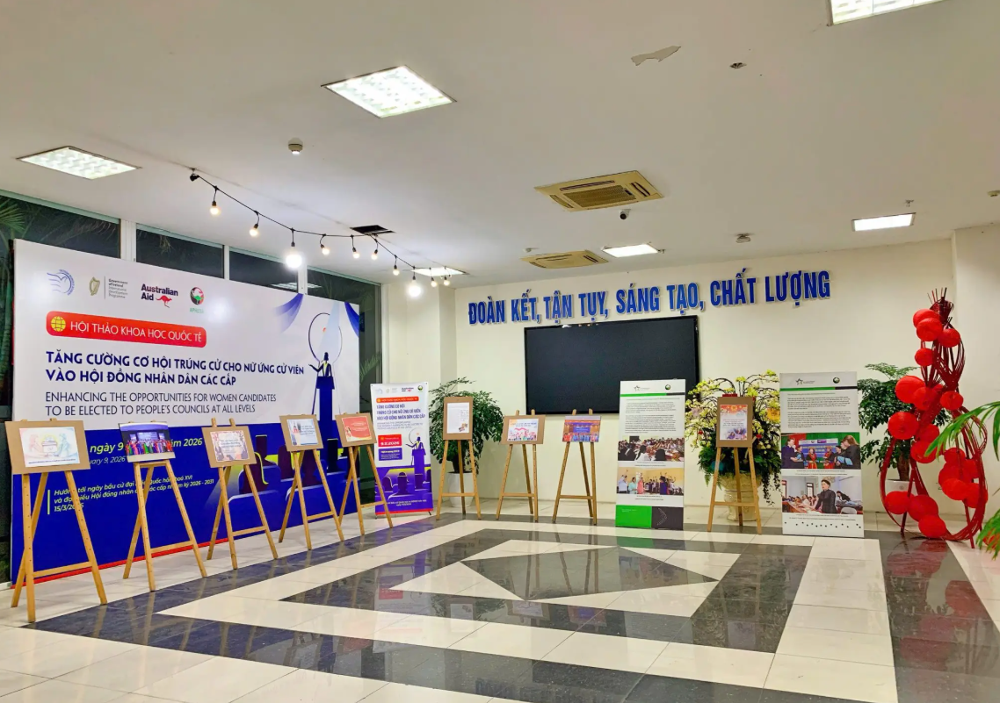
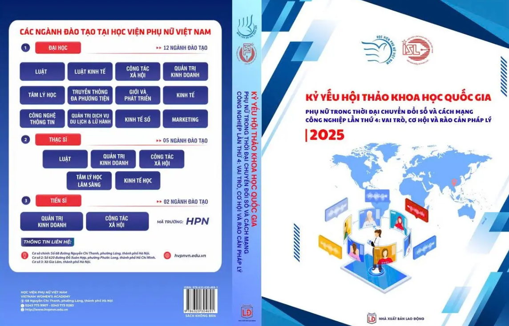
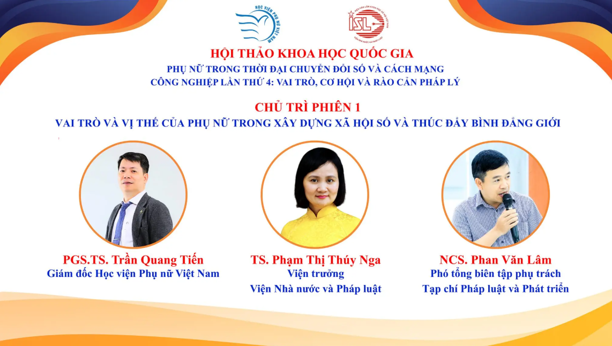
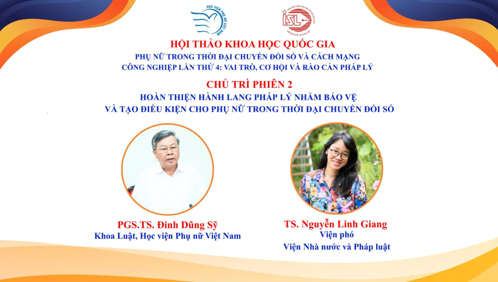

SÔI NỔI HỘI THẢO NGHIÊN CỨU KHOA HỌC CỦA GIẢNG VIÊN VÀ SINH VIÊN VIỆN CÔNG NGHỆ THÔNG TIN
18/05/2026
Sáng ngày 13/5/2026, Viện Công nghệ thông tin – Học viện Phụ nữ Việt Nam đã tổ chức thành công hai hội thảo khoa học với nhiều nội dung thiết thực, cập nhật xu hướng công nghệ hiện đại:
📌 Hội thảo nghiên cứu khoa học sinh viên Viện Công nghệ thông tin
🔹 Chủ đề: “Ứng dụng trí tuệ nhân tạo và AI tạo sinh trong học tập và nghiên cứu khoa học của sinh viên”
📌 Hội thảo nghiên cứu khoa học giảng viên Viện Công nghệ thông tin
🔹 Chủ đề: “Ứng dụng trí tuệ nhân tạo (AI) trong nghiên cứu khoa học và giảng dạy đại học”
💡 Hội thảo nghiên cứu khoa học là dịp để giảng viên và sinh viên cùng trao đổi học thuật, chia sẻ các nghiên cứu, ý tưởng sáng tạo và ứng dụng thực tiễn của AI trong học tập, giảng dạy và nghiên cứu khoa học.
🎓 Những đề tài chất lượng cùng các góc nhìn mới mẻ đã thể hiện tinh thần đổi mới, sáng tạo và khả năng thích ứng với xu thế công nghệ số của giảng viên, sinh viên Viện Công nghệ thông tin.
🚀 Với định hướng đào tạo gắn liền thực tiễn và công nghệ hiện đại, Viện Công nghệ thông tin – Học viện Phụ nữ Việt Nam không ngừng tạo môi trường học tập năng động, sáng tạo và bắt kịp xu hướng chuyển đổi số toàn cầu.
—————————————-
🎯 Thông tin tuyển sinh ngành Công nghệ thông tin - Học viện Phụ nữ Việt Nam 2026:
💻CHƯƠNG TRÌNH TIÊU CHUẨN
👉Chỉ tiêu: 180 sinh viên
👉Tổ hợp xét tuyển linh hoạt: A00, A01, D01, D09, X26, X06
👉 Phương thức xét tuyển đa dạng
🧩CHƯƠNG TRÌNH THIẾT KẾ VÀ PHÁT TRIỂN GAME
👉Chỉ tiêu: 70 sinh viên
👉Tổ hợp xét tuyển linh hoạt: A00, A01, D01, D09, X26, X06
👉 Phương thức xét tuyển đa dạng
Hãy để Viện Công nghệ thông tin - Học viện Phụ nữ Việt Nam là bệ phóng cho khát vọng và trí tuệ của bạn!
📩 Liên hệ tư vấn: Tầng 14, nhà A2, Học viện Phụ nữ Việt Nam. Số 68 Đường Nguyễn Chí Thanh, Phường Láng, TP. Hà Nội.
Danh sách đề tài nghiên cứu khoa học sinh viên cấp Học viện năm học 2025 – 2026
11/04/2026
Cùng với sự phát triển của hoạt động nghiên cứu khoa học trong nhà trường, các đề tài nghiên cứu khoa học sinh viên cấp Học viện tại Học viện Phụ nữ Việt Nam ngày càng khẳng định vai trò quan trọng trong việc nâng cao chất lượng đào tạo và phát triển năng lực học thuật của người học. Đây là những đề tài được lựa chọn từ cấp khoa, có sự đầu tư về nội dung, phương pháp và định hướng nghiên cứu, thể hiện rõ nét hơn năng lực và sự trưởng thành của sinh viên trong hoạt động khoa học.




4 đề tài cấp Bộ: Dấu ấn nghiên cứu gắn với hoạch định chính sách về phụ nữ và bình đẳng giới năm 2025
03/04/2026
Năm 2025, Học viện Phụ nữ Việt Nam triển khai 4 đề tài nghiên cứu khoa học cấp Bộ, tập trung vào các vấn đề trọng tâm của công tác phụ nữ, bình đẳng giới và thích ứng với bối cảnh chuyển đổi số. Dù số lượng không nhiều, nhưng mỗi đề tài đều được đầu tư theo chiều sâu, gắn trực tiếp với thực tiễn quản lý và nhu cầu hoạch định chính sách.
Ở một hướng tiếp cận khác, đề tài “Tổng quan nghiên cứu về công tác phụ nữ và bình đẳng giới giai đoạn 2015–2025, xây dựng bộ số liệu phục vụ định hướng nhiệm kỳ 2026–2031” lại tập trung vào việc hệ thống hóa tri thức và xây dựng nền tảng dữ liệu. Trong bối cảnh việc ra quyết định ngày càng cần dựa trên bằng chứng, việc hình thành một bộ dữ liệu đầy đủ, có hệ thống về phụ nữ và giới mang ý nghĩa quan trọng. Kết quả của đề tài không chỉ phục vụ nghiên cứu mà còn có thể hỗ trợ các cơ quan quản lý trong việc xây dựng và điều chỉnh chính sách.
Hai đề tài còn lại thể hiện rõ sự quan tâm của Học viện đối với chuyển đổi số. Đề tài “Phát huy vai trò của người mẹ trong giáo dục con cái thích ứng với chuyển đổi số (HPN.BO.01/25)” tiếp cận vấn đề từ góc độ gia đình, nhấn mạnh vai trò của người mẹ trong việc định hướng, hỗ trợ con cái trước những thay đổi nhanh chóng của môi trường số. Trong khi đó, đề tài “Nâng cao năng lực số cho cán bộ Hội LHPN Việt Nam (HPN.BO.02/25)” lại tập trung vào yếu tố con người trong hệ thống tổ chức, hướng tới việc trang bị kỹ năng và năng lực cần thiết để đội ngũ cán bộ có thể đáp ứng yêu cầu công việc trong bối cảnh mới. Đề tài được hội đồng thẩm định thông qua và đánh giá cao về tính ứng dụng.
Điểm chung của các đề tài cấp Bộ là đều có sự kết nối chặt chẽ giữa nghiên cứu và thực tiễn. Các vấn đề được lựa chọn không mang tính lý thuyết đơn thuần mà xuất phát từ nhu cầu cụ thể của công tác quản lý, từ hoạt động của tổ chức Hội đến việc triển khai các chương trình mục tiêu quốc gia hay yêu cầu chuyển đổi số. Chính vì vậy, các kết quả nghiên cứu không chỉ dừng lại ở giá trị học thuật mà còn có khả năng ứng dụng trong thực tế.

Hoạt động NCKH tại Học viện Phụ nữ Việt Nam: Đóng góp thiết thực cho công tác nghiên cứu, giảng dạy và ứng dụng
13/02/2025
Học viện không chỉ là một trung tâm đào tạo chất lượng mà còn là một đơn vị nghiên cứu khoa học uy tín, đóng góp đáng kể vào sự phát triển tri thức và ứng dụng thực tiễn. Trong năm học 2023-2024, Học viện đã đạt được nhiều thành tựu nổi bật với tổng cộng 283 sản phẩm khoa học, khẳng định tinh thần nghiên cứu nghiêm túc và tính ứng dụng cao trong giảng dạy cũng như thực tiễn.
Hệ thống sản phẩm khoa học của Học viện rất phong phú, bao gồm:
140 bài báo khoa học được đăng trên các tạp chí trong nước và quốc tế, phản ánh sự phát triển mạnh mẽ của công tác nghiên cứu chuyên sâu. Tiêu biểu là bài báo “Viewing advertisements in social networks: the attitude-intention inconsistency revisited” trên Online Information Review. Nghiên cứu này xây dựng một khuôn khổ lý thuyết nhằm lý giải khoảng cách giữa thái độ và ý định trong hành vi xem quảng cáo trên mạng xã hội. Thay vì chỉ tập trung vào những bất đồng về mặt ngữ nghĩa và đánh giá trong đo lường các yếu tố theo Lý thuyết Hành vi Dự định (TPB), tác giả đề xuất và kiểm định một mô hình lý thuyết, trong đó xem xét vai trò của các yếu tố điều tiết có thể ảnh hưởng đến mối quan hệ giữa thái độ và ý định hành vi.
121 báo cáo khoa học được công bố trong kỷ yếu hội nghị, hội thảo, tạo ra diễn đàn trao đổi học thuật và ứng dụng thực tiễn. Một ví dụ điển hình là báo cáo tại hội thảo “Phát triển bền vững trong nền kinh tế số”, đưa ra các giải pháp nâng cao năng lực số trong quản lý và sản xuất.
22 đầu sách, chương sách, tập bài giảng và tài liệu nghiên cứu phục vụ công tác giảng dạy và tham khảo chuyên môn. Trong đó, cuốn sách “Quản trị nhân sự trong thời đại số” đã trở thành tài liệu tham khảo quan trọng cho các nhà quản lý và doanh nghiệp.
Những con số này cho thấy sự phát triển bền vững của hoạt động nghiên cứu khoa học tại Học viện, với sự tham gia tích cực của giảng viên và nhà nghiên cứu.
Những thành tựu khoa học của Học viện trong năm học 2023-2024 là minh chứng rõ nét cho tinh thần nghiên cứu nghiêm túc và sự đóng góp thiết thực vào công tác giảng dạy, ứng dụng. Với nền tảng nghiên cứu vững chắc, Học viện tiếp tục khẳng định vị thế là một trung tâm tri thức uy tín, tạo ra giá trị khoa học và thực tiễn cho cộng đồng và xã hội.

Những góc nhìn mới về: Phụ nữ tham chính
10/03/2026
Ngày 11/3/2026, Học viện Phụ nữ Việt Nam sẽ phối hợp với Văn phòng Tổ chức Nhân dân Úc vì Y tế, Giáo dục và Phát triển hải ngoại tại Việt Nam (APHEDA) tổ chức tọa đàm với chủ đề “Phụ nữ tham chính – Câu chuyện không của riêng ai”. Sự kiện hướng đến mục tiêu nhằm nâng cao nhận thức về vai trò lãnh đạo và sự tham gia của phụ nữ trong đời sống chính trị, đồng thời chào mừng Ngày bầu cử đại biểu Quốc hội khóa XVI và đại biểu Hội đồng nhân dân các cấp nhiệm kỳ 2026 – 2031 diễn ra ngày 15/3/2026.
Tọa đàm nằm trong chuỗi hoạt động truyền thông “Nâng cao nhận thức cho nữ sinh viên Học viện Phụ nữ Việt Nam về năng lực lãnh đạo, tham chính và sự tham gia của phụ nữ trong chính trị”, được triển khai trong khuôn khổ hợp tác giữa Học viện Phụ nữ Việt Nam và Tổ chức APHEDA. Chuỗi hoạt động hướng tới mục tiêu thúc đẩy bình đẳng giới, tăng cường vai trò của nữ đại biểu dân cử trong đời sống chính trị – xã hội.
Theo Ban Tổ chức, tọa đàm thu hút sự tham gia của khoảng 150 đại biểu, bao gồm các chuyên gia, nhà nghiên cứu, đại biểu dân cử, giảng viên, sinh viên và đại diện nhiều trường đại học tại Hà Nội. Thông qua các tham luận và phần trao đổi trực tiếp, chương trình hướng đến việc chia sẻ kinh nghiệm thực tiễn, góc nhìn đa chiều về hành trình tham chính của phụ nữ, đồng thời truyền cảm hứng cho thế hệ trẻ, đặc biệt là nữ sinh viên, mạnh dạn tham gia vào các hoạt động lãnh đạo, quản lý và chính trị trong tương lai.
Chương trình có sự tham gia của nhiều diễn giả giàu kinh nghiệm trong lĩnh vực chính trị và nghiên cứu giới. Trong đó có bà Vũ Thị Kim Liên – Chủ tịch Hội Liên hiệp Phụ nữ thành phố Hải Phòng, đại biểu Hội đồng nhân dân thành phố nhiệm kỳ 2021–2026; Ông Ngô Tự Nam – Nguyên Phó Chủ nhiệm Ủy ban Pháp luật của Quốc hội; TS. Lê Hồng Việt – Viện trưởng Viện Nghiên cứu Phụ nữ, Học viện Phụ nữ Việt Nam cùng sự tham gia chia sẻ của sinh viên Phan Lâm Khánh Linh – Sinh viên ngành Giới và Phát triển của Học viện. Sự kết hợp giữa góc nhìn của các nhà hoạch định chính sách, nhà nghiên cứu và thế hệ trẻ được kỳ vọng sẽ mang lại những trao đổi thẳng thắn, sinh động về hành trình phụ nữ tham gia vào đời sống chính trị.

Trong bối cảnh hiện nay, sự tham gia của phụ nữ vào các cơ quan nhà nước và bộ máy lãnh đạo được xem là một trong những thước đo quan trọng phản ánh tiến bộ xã hội. Khi phụ nữ tham gia nhiều hơn vào các vị trí lãnh đạo, quá trình hoạch định và thực thi chính sách cũng có thêm những góc nhìn đa dạng, góp phần nâng cao tính minh bạch, hiệu quả và sự bao trùm của các quyết định chính trị.
Thực tế cho thấy Việt Nam đã đạt được nhiều kết quả tích cực trong việc thúc đẩy sự tham gia của phụ nữ vào chính trị. Tỷ lệ nữ đại biểu Quốc hội khóa XV (nhiệm kỳ 2021–2026) đạt 30,26%, tương ứng 151 nữ đại biểu trên tổng số 499 đại biểu – mức cao nhất kể từ khóa VI và vượt chỉ tiêu đề ra. Con số này cũng cao hơn 3,54% so với nhiệm kỳ Quốc hội khóa XIV. Tuy nhiên, khoảng cách giới trong lĩnh vực chính trị vẫn còn tồn tại ở nhiều cấp độ, từ cơ hội tiếp cận vị trí lãnh đạo cho tới điều kiện phát triển năng lực.
Chiến lược quốc gia về bình đẳng giới giai đoạn 2021–2030 đặt mục tiêu có 60% cơ quan nhà nước và chính quyền địa phương có lãnh đạo chủ chốt là phụ nữ vào năm 2025. Bên cạnh đó, Luật Bầu cử năm 2015 cũng đặt mục tiêu tỷ lệ nữ đại biểu Quốc hội và Hội đồng nhân dân các cấp đạt ít nhất 35%. Để đạt được những mục tiêu này, việc nâng cao nhận thức xã hội, tạo cơ hội học hỏi và truyền cảm hứng cho thế hệ trẻ, đặc biệt là phụ nữ trẻ, được xem là giải pháp quan trọng và lâu dài.
Ban giám khảo đã lựa chọn 10 sản phẩm tiêu biểu nhất để trao giải, bao gồm 1 giải nhất, 2 giải nhì, 3 giải ba, 3 giải khuyến khích và 1 giải sáng tạo. Những tác phẩm đạt giải không chỉ mang tính sáng tạo mà còn truyền tải những thông điệp mạnh mẽ về bình đẳng giới, vai trò của phụ nữ trong đời sống chính trị và trách nhiệm của thế hệ trẻ đối với các vấn đề xã hội. Các sản phẩm tiêu biểu cũng sẽ được trưng bày tại không gian sự kiện, tạo cơ hội để người tham dự tiếp cận và lan tỏa những thông điệp tích cực.
Tọa đàm “Phụ nữ tham chính – Câu chuyện không của riêng ai” sẽ diễn ra vào 9h00 ngày 11/3/2026 tại Học viện Phụ nữ Việt Nam (68 Nguyễn Chí Thanh, phường Láng, TP. Hà Nội), Ban Tổ chức Toạ đàm trân trọng kính mời các đại biểu, nhà khoa học, giảng viên, sinh viên và những người quan tâm đến vấn đề bình đẳng giới, sự tham gia của phụ nữ trong đời sống chính trị – xã hội tới tham dự chương trình, cùng chia sẻ góc nhìn, kinh nghiệm và lan tỏa thông điệp của sự kiện.

Hội thảo khoa học quốc gia: Phụ nữ trước yêu cầu của chuyển đổi số và đổi mới công nghệ
07/12/2025
Ngày 8/12/2025, tại Học viện Phụ nữ Việt Nam (68 Nguyễn Chí Thanh, Hà Nội), hội thảo khoa học quốc gia với chủ đề “Phụ nữ trong thời đại chuyển đổi số và Cách mạng công nghiệp lần thứ tư: Vai trò, cơ hội và rào cản pháp lý” sẽ được tổ chức trực tiếp, quy tụ nhiều nhà khoa học, giảng viên, chuyên gia pháp lý và đại diện các cơ quan, tổ chức liên quan đến bình đẳng giới trên cả nước. Đây được đánh giá là một trong những sự kiện học thuật lớn nhất về chủ đề phụ nữ và môi trường số trong năm 2025.
Theo Ban Tổ chức, hội thảo năm nay nhận được sự quan tâm rất lớn của giới nghiên cứu. Gần 130 bản tóm tắt đã được gửi đến, trong đó 92 bài toàn văn được tiếp nhận để đưa vào quy trình phản biện. Sau khi chọn lọc, có 56 bài đạt chất lượng tốt, đảm bảo yêu cầu khoa học và thực tiễn để xuất bản trong Kỷ yếu hội thảo. Khối lượng nghiên cứu phong phú này hứa hẹn cung cấp nguồn tư liệu quan trọng, góp phần định hướng xây dựng chính sách và giải pháp nhằm thúc đẩy bình đẳng giới trong bối cảnh công nghệ thay đổi nhanh chóng.

Hội thảo dự kiến khai mạc lúc 8h30 với phát biểu đề dẫn của PGS.TS Trần Quang Tiến – Giám đốc Học viện Phụ nữ Việt Nam và TS. Phạm Thị Thúy Nga – Viện trưởng Viện Nhà nước và Pháp luật. Đây là hai cơ quan đồng tổ chức đóng vai trò dẫn dắt nội dung, hướng nghiên cứu và kết nối các chuyên gia tham dự.
Nội dung trọng tâm tại phiên 1: Vai trò và vị thế phụ nữ trong xây dựng xã hội số

Phiên thảo luận đầu tiên, diễn ra từ 8h50, sẽ tập trung vào những thách thức và cơ hội đặt ra đối với phụ nữ trong xây dựng xã hội số, đồng thời thảo luận về cách thúc đẩy bình đẳng giới trong môi trường công nghệ. Phiên họp do ba chuyên gia chủ trì: PGS.TS Trần Quang Tiến, TS. Phạm Thị Thúy Nga và NCS. Phan Văn Lâm – Phó tổng biên tập phụ trách Tạp chí Pháp luật và Phát triển.
Dựa trên thông tin từ Ban Tổ chức, phiên một sẽ có ba tham luận chính. Tham luận đầu do TS. Nguyễn Linh Giang (Viện Nhà nước và Pháp luật, Viện Hàn lâm KHXH Việt Nam) trình bày, dự kiến tập trung vào vai trò của phụ nữ trong giáo dục quyền con người ở thời đại chuyển đổi số. Đây là chủ đề quan trọng bởi khả năng tiếp cận thông tin, truyền thông kỹ thuật số và các giá trị quyền con người đang định hình lại năng lực tham gia xã hội của phụ nữ.
Tham luận thứ hai của TS. Trần Thị Bình (Học viện Báo chí và Tuyên truyền) sẽ bàn về quyền chính trị của phụ nữ trong pháp luật Việt Nam. Một số vấn đề dự kiến được đề cập gồm: sự hiện diện của phụ nữ trong cơ quan dân cử, vai trò của họ trong hoạch định chính sách và cách chuyển đổi số mở rộng không gian tham gia chính trị của phụ nữ.
Tham luận thứ ba dự kiến thu hút sự quan tâm của các doanh nghiệp và đơn vị đào tạo: nghiên cứu của PGS.TS Dương Kim Anh (Học viện Phụ nữ Việt Nam) và TS. Nguyễn Thị Tố Uyên (Trường Đại học Ngoại thương) về nữ lãnh đạo trong bối cảnh Cách mạng công nghiệp 4.0. Nội dung được kỳ vọng lý giải những rào cản văn hóa, tổ chức và thể chế đối với phụ nữ ở vị trí quản lý, từ đó kiến nghị giải pháp phát triển đội ngũ nữ lãnh đạo trong lĩnh vực khoa học – công nghệ và các ngành nghề mới.
Phần thảo luận mở vào cuối phiên một được kỳ vọng tạo diễn đàn trao đổi đa chiều giữa giới học thuật, đại diện các cơ quan quản lý và tổ chức xã hội. Các vấn đề như quấy rối trực tuyến, phân biệt đối xử trong môi trường làm việc số, thiếu cơ hội đào tạo nâng cao năng lực số cho phụ nữ được dự báo sẽ thu hút nhiều ý kiến.
Phiên 2: Hoàn thiện hành lang pháp lý bảo vệ phụ nữ trong môi trường số

Từ lúc 10h35, hội thảo bước sang phiên thứ hai, tập trung vào khía cạnh pháp lý của bình đẳng giới trong thời đại số. phiên này do PGS.TS Đinh Dũng Sỹ (Khoa Luật, Học viện Phụ nữ Việt Nam) và TS. Nguyễn Linh Giang chủ trì.
Tham luận của TS. Phạm Thị Thúy Nga dự kiến sẽ mở đầu với chủ đề xây dựng và hoàn thiện pháp luật bảo vệ dữ liệu cá nhân gắn với quyền riêng tư của phụ nữ trong môi trường số. Đây là vấn đề nổi bật trong vài năm gần đây, khi phụ nữ là nhóm chịu nhiều rủi ro từ việc lộ thông tin, tấn công mạng, xâm phạm đời tư hoặc lạm dụng dữ liệu trong thương mại điện tử.
Tiếp theo, tham luận của TS. Kiều Thị Thùy Linh (Học viện Phụ nữ Việt Nam) sẽ phân tích các thách thức pháp lý khi phụ nữ tham gia ký kết hợp đồng điện tử trong thương mại số. Một số vấn đề được dự đoán nêu ra bao gồm thẩm quyền xác thực hợp đồng, cơ chế bảo vệ người tiêu dùng, giải quyết tranh chấp và trách nhiệm pháp lý của nền tảng số.
Tham luận thứ ba trong phiên hai, do TS. Đoàn Xuân Trường (Trường Đại học Luật Hà Nội) trình bày, sẽ tập trung vào pháp luật đào tạo nghề cho lao động nữ trước tác động của trí tuệ nhân tạo. Theo góc nhìn pháp lý, nhu cầu đào tạo lại, chuyển đổi nghề và cơ chế bảo vệ lao động nữ trong ngành nghề công nghệ cao là vấn đề then chốt.
Kỳ vọng từ sự kiện học thuật quy mô quốc giaHội thảo lần này không chỉ mang tính chuyên môn mà còn đặt mục tiêu kết nối giữa giới nghiên cứu và cơ quan hoạch định chính sách. Ban Tổ chức kỳ vọng những nội dung thảo luận sẽ mở ra định hướng mới trong việc xây dựng cơ chế bảo vệ quyền phụ nữ, những giải pháp hỗ trợ nâng cao năng lực số và bảo đảm sự tham gia bình đẳng của phụ nữ trong các lĩnh vực công nghệ.
Các bài viết được phản biện và lựa chọn xuất bản trong Kỷ yếu được đánh giá là nguồn luận cứ quan trọng, không chỉ tổng hợp cơ sở lý luận mà còn cung cấp dữ liệu thực tiễn. Nhiều nghiên cứu tập trung vào những vấn đề mang tính thời sự: khoảng cách giới trong tiếp cận công nghệ, an toàn số, xây dựng chiến lược đào tạo kỹ năng số cho phụ nữ, hoàn thiện pháp luật và phòng ngừa rủi ro trong môi trường mạng.
Hội thảo dự kiến thu hút sự quan tâm của cơ quan quản lý nhà nước, trường đại học, viện nghiên cứu, tổ chức xã hội, doanh nghiệp công nghệ và các bên liên quan đến bình đẳng giới. Đây là dịp để xác định những yêu cầu cấp thiết trong xây dựng chiến lược chuyển đổi số toàn diện, bảo đảm phụ nữ không đứng ngoài dòng chảy phát triển.
Với những nội dung được chuẩn bị công phu, sự tham gia của nhiều chuyên gia uy tín và nguồn nghiên cứu phong phú, hội thảo khoa học quốc gia “Phụ nữ trong thời đại chuyển đổi số và Cách mạng công nghiệp lần thứ tư: Vai trò, cơ hội và rào cản pháp lý” được kỳ vọng sẽ tạo dấu ấn chuyên môn, đồng thời đóng góp vào tư duy chính sách, xây dựng hành lang pháp lý và nâng cao nhận thức xã hội về vai trò của phụ nữ trong kỷ nguyên số.